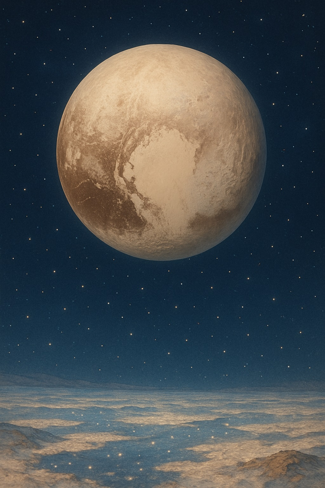
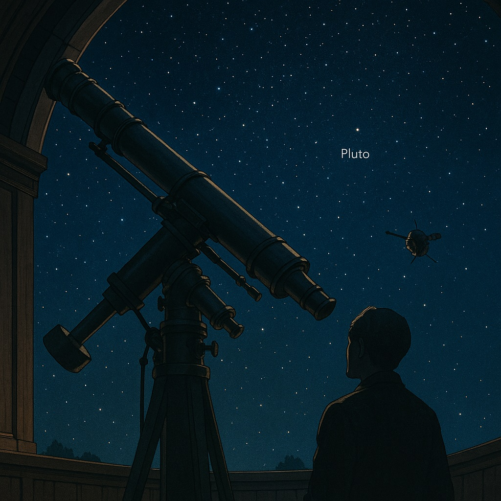
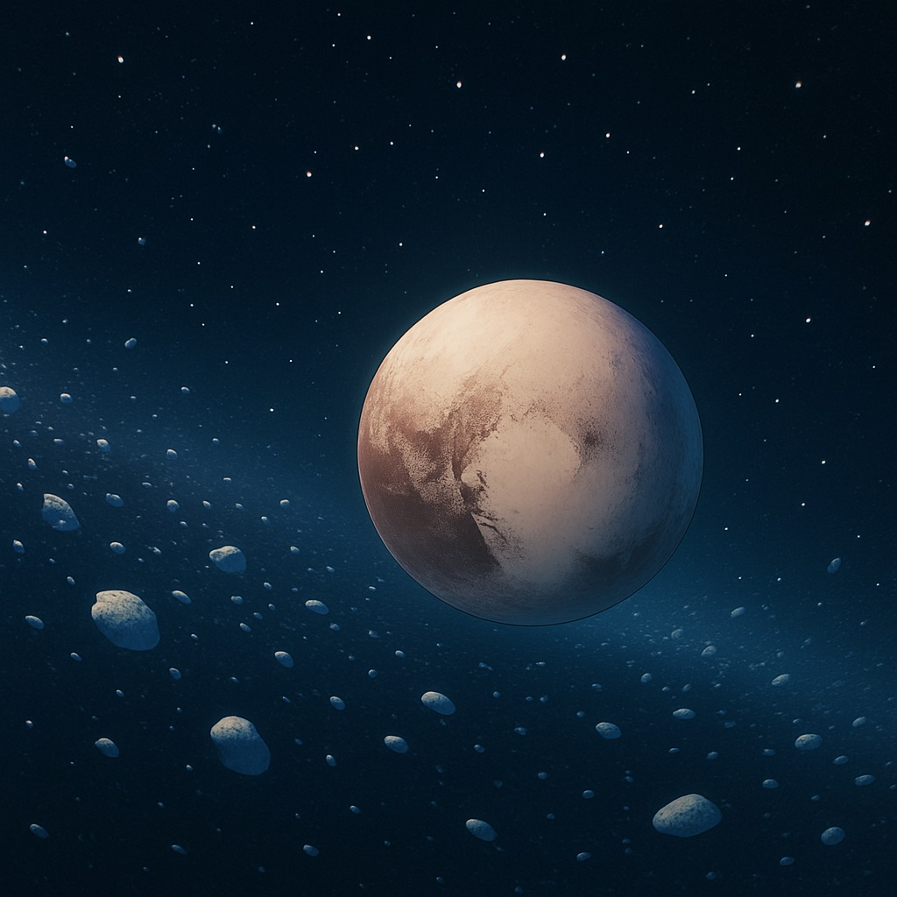
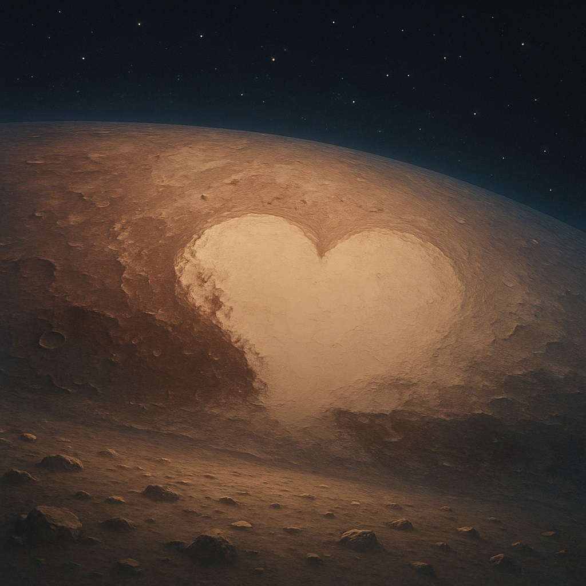
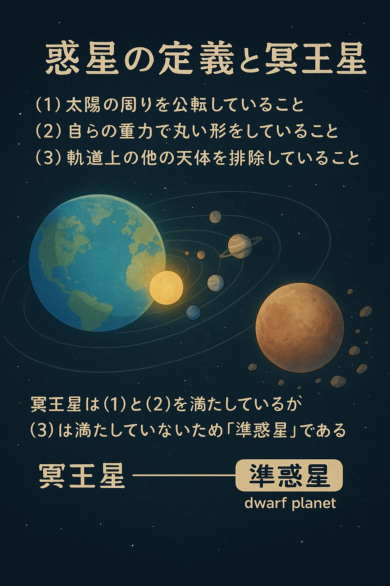
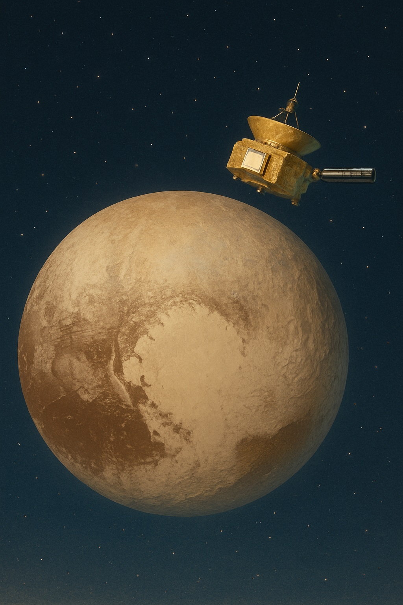

⏳セーラー・プルートと開く、冥王星の扉
〜時の番人が見つめる太陽系の果て〜

冥王星は、遠くて冷たい太陽系の果てにひっそりとたたずむ、氷の小さな世界だよ。
ねえ、エミリー
今日は、かつて太陽系の9番目の惑星として知られ、今は「準惑星（じゅんわくせい）」と呼ばれている冥王星（めいおうせい）のお話をするね。
冥王星は、「セーラー・プルート」が見守る、時間と境界の番人のような存在。遠くて小さいけれど、とっても特別な役割をもっているんだ。
🔍 発見のものがたり
冥王星は、たった24歳の天文学者、クライド・トンボーによって発見されたんだ。
- 1930年の発見：天王星と海王星の動きから「未知の惑星X」があると考えられ、**クライド・トンボー**が写真の星の動きから発見したよ。
- 名前の由来：ローマ神話の冥界の神「プルート」にちなんで名付けられたんだ。名付け親は、11歳のイギリスの少女・ヴェネチアちゃん！
🧭 太陽系の果ての住人
冥王星は「エッジワース・カイパーベルト」にあるよ。
- 遠く離れた軌道：太陽から約40天文単位も離れていて、公転には**248年**かかるよ。
- 楕円で傾いた軌道：他の惑星とちがって、軌道が大きく傾き、つぶれた形なんだ。
🧊 氷と岩の小さな世界
冥王星には、まるで「ハート」のような地形があるんだ。
- スプートニク平原：冥王星には**ハート型の大地**「スプートニク平原」があるよ。これは氷でできた巨大な盆地なんだ。
- 窒素やメタンの氷：地表には水だけじゃなく、**窒素やメタンの氷**も広がっていて、まるで氷の王国みたい。
- 大気の霧：太陽の光を受けると、薄いけれど**青い大気のもや**が広がるんだ。夜明けの空みたいで美しいよ。
🌙 カロン：双子のような月
冥王星の最大の衛星「カロン」は、とても大きくて、まるで双子のように動くよ。
- 共通重心：冥王星とカロンは、おたがいの重心を中心に**二重惑星のように**回っているんだ。
- 暗くて不思議な表面：カロンには「モルドール・マクラ」と呼ばれる暗い地域があって、まるで冥界の門みたい。
📚 「準惑星」ってなに？
2006年に冥王星は「惑星」から「準惑星」に変わったんだ。
- 3つの条件：惑星と呼ばれるには、(1)太陽の周りを回り、(2)丸い形で、(3)**軌道の周りの天体を排除している**ことが必要。
- 冥王星は：上の2つは満たすけれど、(3)を満たしていないため「準惑星」に分類されるようになったんだ。
- 賛否両論：いまでも、「やっぱり冥王星は惑星だ！」と主張する人たちがいるんだよ。
時を守るセーラー・プルート：「境界を超えるには、勇気と知恵が必要なの」
冥王星は、まさにその境界を生きる存在なのかもしれないね。
🚀 探査機「ニュー・ホライズンズ」
人類が冥王星に最接近したのは、たった一度だけ。
- 2015年接近：NASAの探査機「ニュー・ホライズンズ」が、**9年半かけて冥王星に到達**したんだ。
- 貴重なデータ：このとき得られたデータで、冥王星のハートや氷の山々が初めてくわしくわかったんだよ。
🌌 冥王星からのメッセージ
冥王星は、太陽系の一番外れにあるけれど、たくさんの不思議とロマンがつまった星。
遠くて小さくても、**境界を超える勇気**や、**孤独な中にも美しさを宿す心**を、そっと教えてくれている気がするね。
エミリーも、宇宙の果てから届いたこの静かな星の声に、耳をすませてみてね。